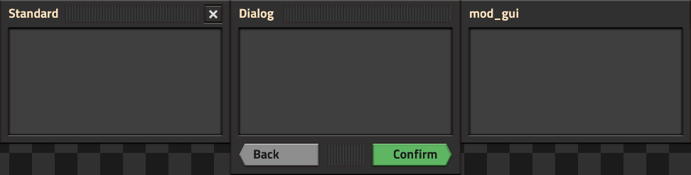
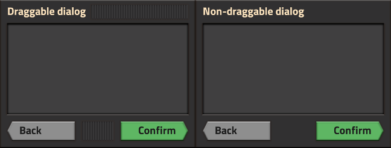
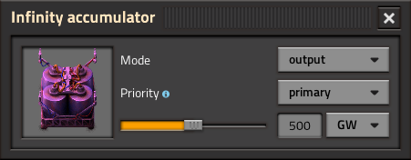
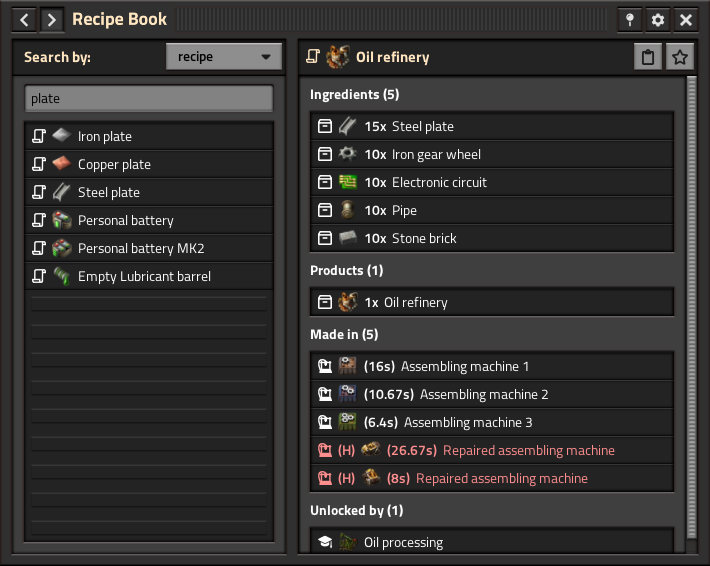

GUI Style Guide
THIS PAGE IS A WORK IN PROGRESS
This style guide is designed to give you an overview of the precepts and specific element styles used to create GUIs. The contents of this guide are merely suggestions, and are not to be taken as gospel. Usage of the word "must" means a very strong recommendation, but things may be changed according to the individual circumstances.
This style guide assumes you know how to create GUIs, assign styles to elements, and edit styles. If you do not know these things, this guide won't be of much use to you.
Throughout this guide, there will be "ready-made styles" provided for
your use and convenience. You can copy these style definitions into
your own mod's data.lua to use them. Additionally, every single one of these ready-made styles has a corresponding style provided by the Factorio Library mod, allowing you to use them without any extra code on your part. Simply prefix the style name with flib_ to use it!
Window

The different window types.
Standalone windows are created using the default frame style. Because of this, you need not specify a style when creating the element.
For windows that contain multiple sub-windows (e.g. most windows that hold a character inventory) outer_frame is used as the outer frame and inner_frame_in_outer_frame is used for each internal window.
Generally there are three kinds of windows:
-
Standard windows:
- Must have a close button in the top-right corner.
- Must be opened as a result of clicking a button or using a hotkey.
-
Dialog windows:
- Must have a row of dialog buttons across the bottom.
- Must not have a close button.
- Must be opened as a result of a hierarchal action - you go "back" to the previous action, or you "confirm" the current action.
- Must have a "Back" button in the bottom-left corner
-
May have a "Confirm" button in the bottom-right corner
- Should only be omitted if there are multiple possible "confirmation" actions (i.e. the main menu can open many possible sub-windows).
- May have other buttons on the dialog row, though these should be used sparingly (use tool buttons instead).
-
mod_gui windows:
-
Must be placed in the
mod_gui.frame_flowGUI parent. -
Must use the
mod_gui.frame_stylestyle. - Must not have a close button or a dialog row.
-
Must be opened using a button in the
mod_gui.button_flow, or by using a hotkey.
-
Must be placed in the
There are not the only kinds of windows that can exist - is also a type that I like to call a compact window. These windows do not have any set rules, are are either persistent on the screen or are opened/closed due to some other user action (i.e. when holding a specific item). As is their namesake, they are usually compact and unobtrusive.
Titlebar

Draggable vs. non-draggable windows.
Each non-compact window must have a titlebar. All titlebars must have a title, and for windows that are meant to be draggable, the titlebar must include a drag handle. Standard windows also include a close button. Other frame action buttons may be added to the left of the close button or to the left of the title, but should be used sparingly.
If you are creating a dialog window, you do not need to create a custom titlebar - you can simply set caption and use_header_filler on the frame itself, and it'll automatically work.
However, if you are creating a standard window, follow these guidelines:
-
Titlebar flow:
- A
horizontal_flowwith the default style. - For draggable windows, set this element's
drag_targetto the window frame.
- A
-
Title text:
- A
labelthat uses theframe_titlestyle. - Only capitalize the first word in the title - all other words should be lowercase.
- Exceptions can be made for mod names.
- Set
ignored_by_interactiontotrueto facilitate dragging.
- A
-
Drag handle (for draggable windows):
- An
empty-widgetset to thedraggable_space_headerstyle.-
heightset to 24 -
horizontally_stretchableset totrue -
right_marginset to4.
-
- Set
ignored_by_interactiontotrueto facilitate dragging.
- An
Ready-made style
styles.titlebar_drag_handle = {
type = "empty_widget_style",
parent = "draggable_space",
left_margin = 4,
right_margin = 4,
height = 24,
horizontally_stretchable = "on"
}-
Pusher (for non-draggable windows):
- An
empty-widgetwithhorizontally_stretchableset totrue.
- An
Ready-made style
styles.horizontal_pusher = {
type = "empty_widget_style",
horizontally_stretchable = "on"
}-
Frame action buttons:
- A
sprite-buttonset to theframe_action_buttonstyle. - Default sprite:
- A 29x29 image with 3px of padding around the edges (32x32 file size).
- Colored
rgb(227, 227, 227). - Close buttons use
utility/close_whitefor this.
- Hovered and clicked sprites:
- A 29x29 image with 3px of padding around the edges (32x32 file size).
- Colored
rgb(29, 29, 29). - Close buttons use
utility/close_blackfor this.
- A
Content frame

An example of
inside_shallow_frame_with_padding, demonstrating the built-in 12px padding.
Each non-compact window must have at least one "content frame" (the light grey pane seen in the above screenshots). This is where the meat of your interface will go.
Content frames are created using the inside_shallow_frame_with_padding
style. This will give you 12px of padding in the frame. If you need to
have zero padding (i.e. for adding a scroll pane or a toolbar), use inside_shallow_frame instead.
It is good practice to separate different "purposes" in a GUI with different content panes:

Separating content panes by "purpose". The left pane is dedicated to search functionality, and the right is dedicated to displaying the object information. These "purposes" are consistent throughout usage of the mod.
If you add multiple content panes, add them to a flow element with horizontal_spacing or vertical_spacing set to 12.
Dialog row
The dialog row is the row of buttons at the bottom of a dialog window. Generally, a window will have one or two of these, but more can be added if necessary.
The game uses a left-to-right methodology for its navigation. Therefore, the leftmost dialog button is the "back" or "cancel" action, while the rightmost is the "confirm" action. Because dialogs have an actual "confirm" action, changes to the content of the dialog should not be saved until the "confirm" button is clicked and the window closed.
Toolbar
Toolbars are a great place to keep a content pane's "title" as well as tools used in that pane. You can see two examples of toolbars in the Recipe Book screenshot above.
Toolbars are created using the subheader_frame style. There are a few locations where they are acceptable:
- At the top of an
inside_shallow_frame(no padding) - At the top of an
inside_deep_frame(usually above a tabbed pane) - Below the tab row in a tabbed pane. Use the
subheader_frame_with_top_borderstyle for the toolbar, and thetabbed_pane_with_no_side_paddingstyle for the tabbed pane.
Footer toolbars
Sometimes it is appropriate to have a toolbar at the bottom instead
of or in addition to a toolbar at the top of a content frame. In this
case, use the subfooter_frame style.
Slots
Slots are sprite buttons that actually "hold" an item. These are used in inventories, and simply use the slot style. Slots are usually kept in a table using the slot_table style.
Slot buttons
Slot buttons are different from slots, in that instead of "holding" an item, they represent an item. These are distinguished by their rounded corners. Slot buttons must be kept in a deep frame with a rubber grid background, using the slot_button style, with the exception of standalone slot buttons, which are directly in a content frame and use the slot_button_in_shallow_frame style.
TO BE CONTINUED